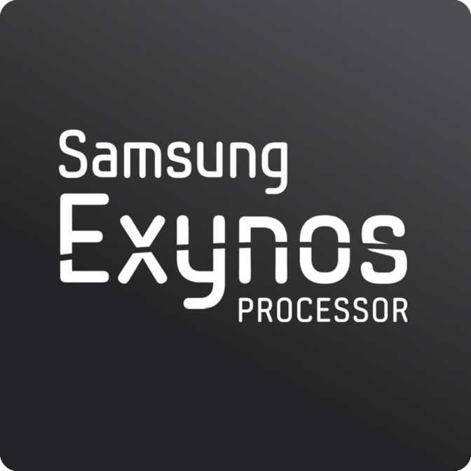

Procesador y ram
El procesador es el cerebro del dispositivo el cual se encarga de realizar todas las operaciones necesarias para el funcionamiento del dispositivo. A nosotros nos interesa los gigahercios (GHz) a los que funciona, los GHz es una unidad de medida para medir la velocidad de procesamiento de los procesadores.
Por lo cual como conclusión respecto a los procesadores cuantos más GHz tengan mejor, dato que se tiene que tener en cuenta si quieres usar el dispositivo para jugar.
No importa tanto si el teléfono tiene dos núcleos (dual core), cuatro u ocho, sino la potencia y eficiencia de estos. Los mejores procesadores suelen ser de marcas como Qualcomm, Intel o MediaTek, como por ejemplo los Snapdragon (Qualcomm) de la serie 800.
La ram es un tipo de memoria que es volátil lo cual quiere decir que cuando se apaga el dispositivo, lo que hay almacenado en dicha memoria, se borra, lo bueno de la ram es que es bastante rapida. Lo que a nosotros nos interesa es que cuanta mas ram tengamos podremos tener mas aplicaciones ejecutandose al mismo tiempo y tendremos mejor fluidez.
En la siguiente tabla os vamos a mostrar varias características de dos procesadores
| Nombre de la cpu | Velocidad de la cpu | Velocidad de la memoria RAM | Hilos de la cpu | |
|---|---|---|---|---|
 |
Qualcomm Snapdragon 865 | 1 x 2.84GHz, 3 x 2.42GHz, 4 x 1.8GHz | 2750MHz | 8 |
|  | Samsung Exynos 990 | 2 x 2.7GHz, 4 x 2.4GHz, 2 x 1.95GHz | 3200MHz |
Os dejamos aquí el link de una página web donde puedes comparar cualquier procesador de smartphone del mercado: Pagina comparar procesadores